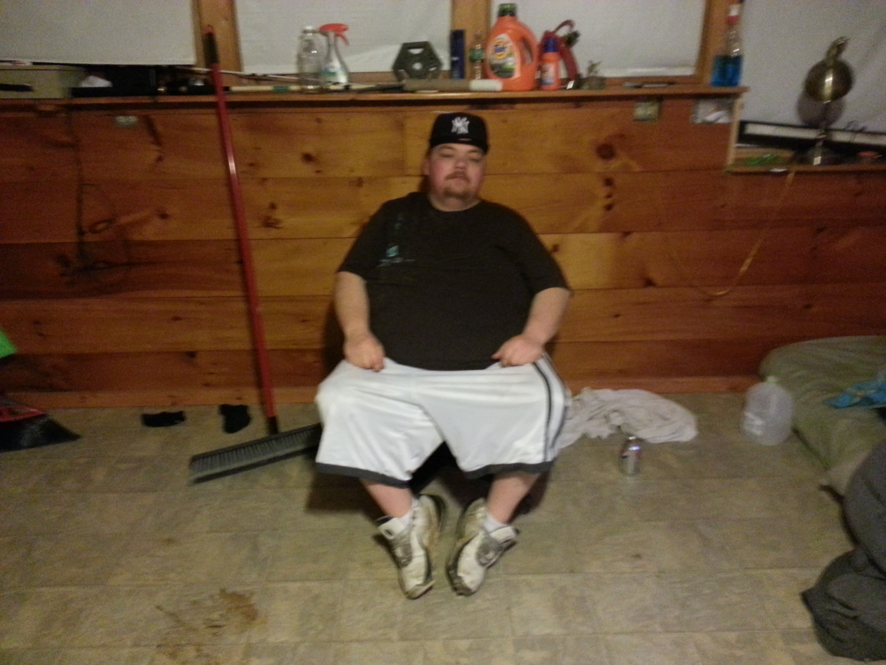

Wilba Rants was never supposed to be a cartoon.
It began with two friends sitting around talking. Our good friend Nick recorded the first one, and when he played it for me, I knew we had to get more of it.
All of it.
Wilba would get going on something—science, religion, women, fatherhood, holidays, philosophy, whatever happened to wander into his head—and I would record him. Most of the time, I was the guy on the other side of the conversation trying not to laugh. Later I became his trusty sidekick, the Dog.
So I recorded. Day and night, whenever I got the chance to be with him, I recorded.
There was a strange sense of urgency to it that I cannot understand, even now.
We thought the recordings were funny. Mostly we just enjoyed each other’s company. We got stoned, told stories, and laughed. We saved the recordings to share with friends. That was about as ambitious as the plan got.
Eventually, we decided to animate a few.
We created a cartoon version of Wilba’s real-life dog to sit beside him. Suddenly, the jokes landed harder. Now it was just a man sitting around, confidently explaining the universe to his dog.
The drawings were crude. The animation was amateur. Neither of us really knew what we were doing. Somehow, that made them better. Our friend Rob moved home from California and dove headfirst into the project with us. The simplicity left Wilba exactly where he belonged: at the center of everything, talking complete nonsense with the absolute confidence of a man delivering eternal truths.
And every once in a while, he actually did.

Wilba died unexpectedly in June of 2015.
Among the recordings he left behind was one we had never intended to animate. In it, his cigarette goes out because, as he puts it:
Moments later, he imagines his own funeral and tells us exactly what to do when the day comes: stop crying, grab the shovels, smile, crack a joke, tell a story about Uncle Wilba, hug everybody, go home, and enjoy the rest of our lives.
So we animated it.
Then I put Wilba Rants away.
For years, those cartoons remained where we had left them, until my son found them on YouTube. He loved them. We began quoting them to each other throughout the day. Through him, I encountered my old friend again—not simply as someone I had lost, but as someone who could still make a kid who never really knew him laugh.
So, I picked up the recordings again. I dug through all of the hours of raw audio I never listened to because I had spent a decade avoiding them. I found gems hidden in that audio that made me laugh until I cried. I needed that.
The new Wilba Rants are built from what he left behind, animated frame by frame with a care we never imagined giving them when they were made. They aren't an attempt to clean Wilba up, explain him, or turn a dead friend into a saint.
He was vulgar. He was ignorant. He was contradictory, ridiculous, loving, infuriating, and very, very funny.
That's the point.
There is something deeply human hiding inside all that nonsense. Wilba could misunderstand nearly everything and occasionally stumble into something true.
Maybe that's all of us.
Laugh at his ignorance long enough and eventually you may recognize your own.
And maybe that's why one stupid sentence about a forgotten cigarette has stayed with me:
Maybe we get distracted. Maybe we fail to appreciate what is already between our lips. Maybe we're having such a good time that we simply forget to notice it burning away.
Either way, it goes out.
And when it does, Wilba already told us what to do.
Crack a joke.
Hug everybody.
Enjoy the rest of your life.
And spark that motherfucker back up.
— Brent Armstrong, Dog